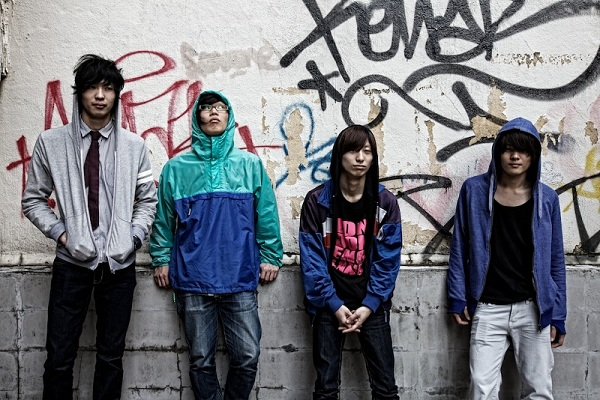

the Lucy

Member
石原和起(Vo&Gt)
Follow @kiss_me_shy
林大祐(Gt&Syn)
Follow @thelucy_yashi
杉崎翔(Ba)
Follow @syo_ippaiattena
石倉洋晃(Dr)
Follow @iskrhrak
ツイートする
Profile
2008年結成。メンバーは全員中学の同級生。
two door cinema club、The wombatsなどに影響を強く受ける。
4つ打ちダンスロックかつエレクトロな音楽性と、語呂の良い日本語によるポップ要素を織り交ぜたサウンドが特徴。
この近年のUKミュージックを独自に咀嚼し、他のバンドには全く類似しない世界観は、是非多くのリスナーに体感していただきたい！
Comment
Hello！the Lucyです！
2011.11月に、ロックの夜明けにて初めて出演した以来、1年振りの出演です！ありがとうございます！
丸1年経って、さらにパワーアップしたthe Lucyを是非ご覧ください！
YouTube
［ DAN DAN SAY YEAH!! ］
［ Dream Disco ］
Link
Official Web Site
facebook
2011.11月に、ロックの夜明けにて初めて出演した以来、1年振りの出演です！ありがとうございます！
丸1年経って、さらにパワーアップしたthe Lucyを是非ご覧ください！